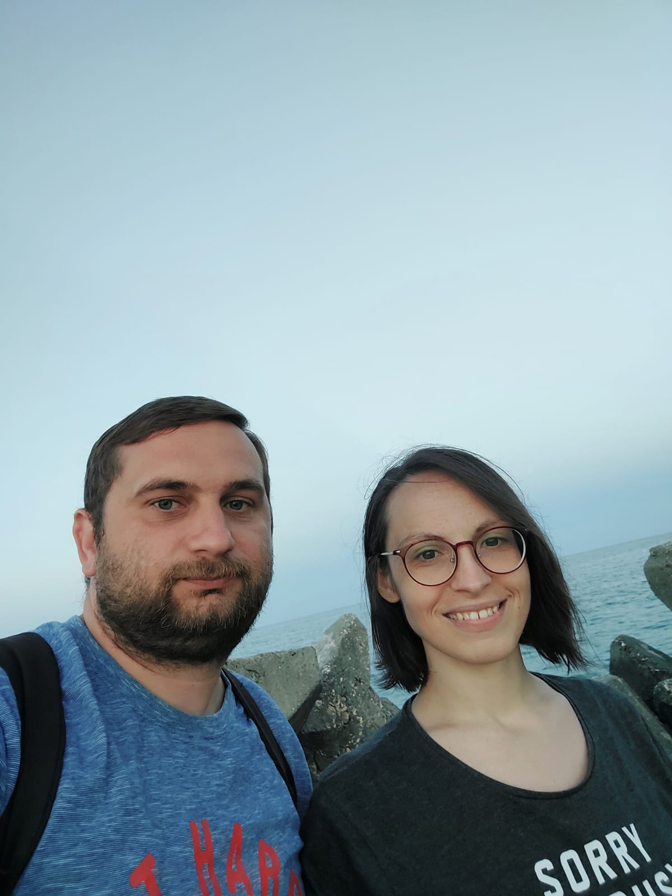

Alexandra Roxana Craciun | WDD 130
Hi. My name is Alexandra, but many friends call me Ale. I am married for 9 years, but no children yet. We live in Sibiu Romania. It is a beautiful city that is visited by many people. In my free time I like to read, cook and bake, and taking long walks. I enjoy finding new recipes and try them out.